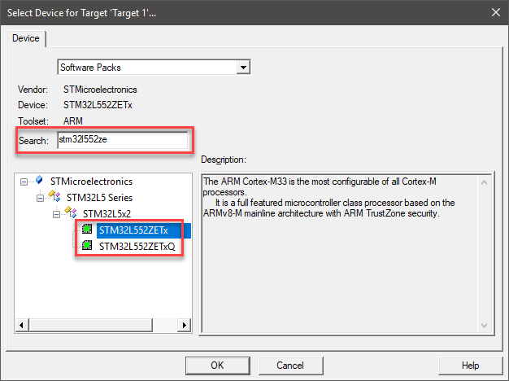
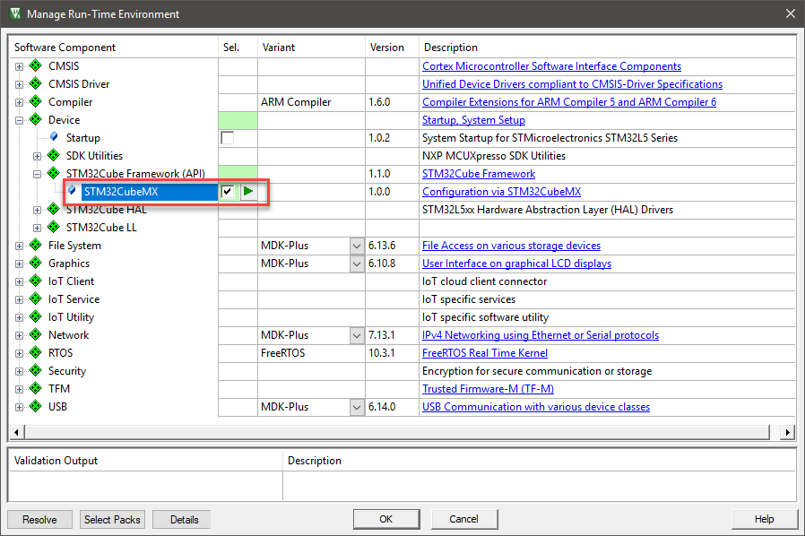
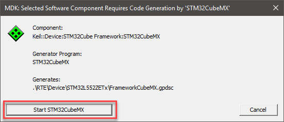
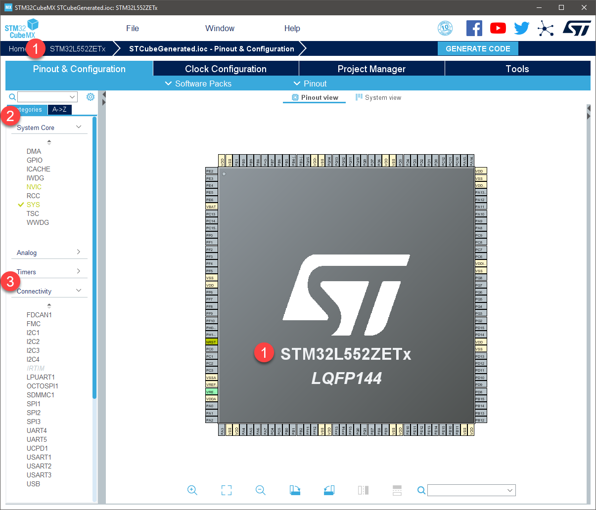
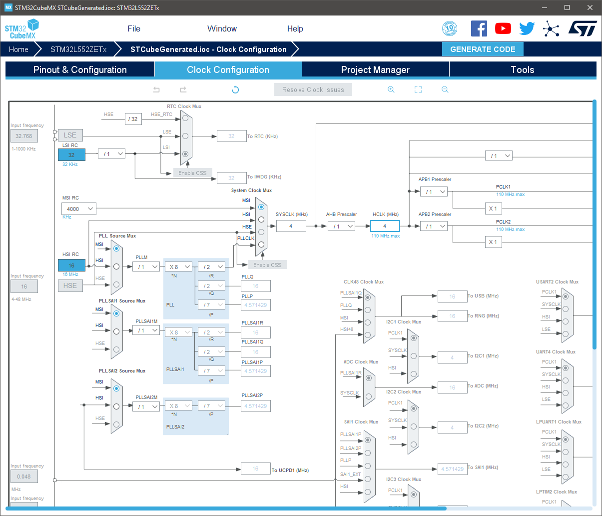
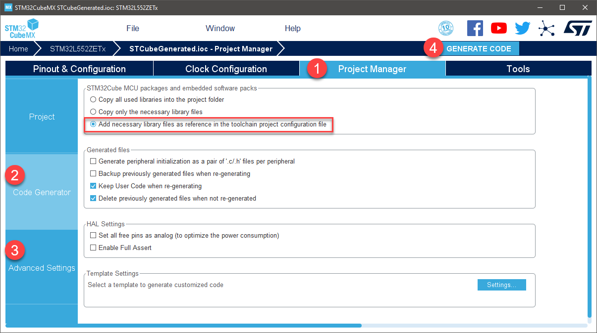
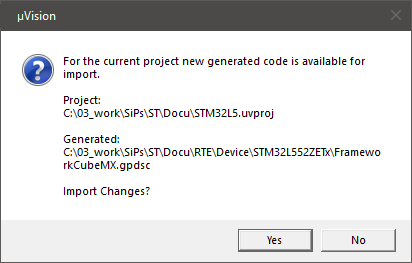
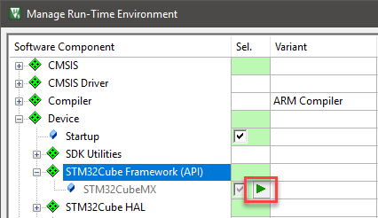
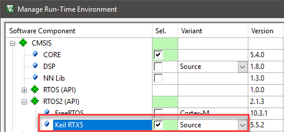
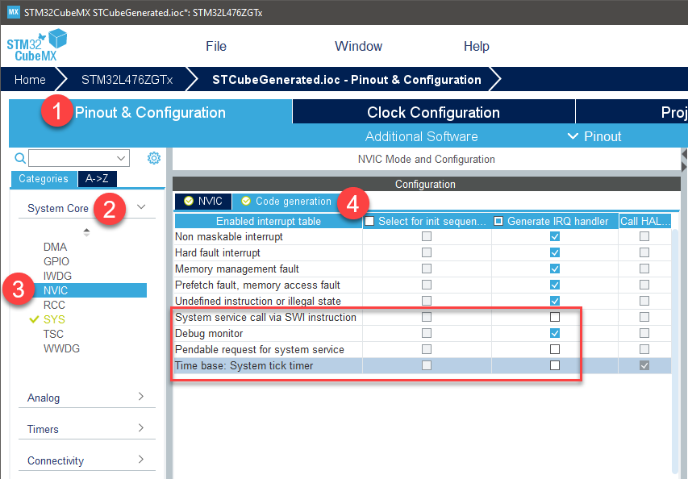

Create New Project with STM32Cube Framework
The following steps explain how to create a new MDK project bsed on an STM32 device.
- Open µVision.
- From the menu, select Project - New µVision project. Choose any name and location.
- Select your target device. If you have many device family packs installed, the search field helps you to find a device quickly:

- The Manage Run-Time Environment window opens.
- [Optional] Switch the component bundle for the component class Device to 'STM32CubeMX' by selecting it from the drop down list in the 'Variant' column.
- Select Device:STM32Cube Framework:STM32CubeMX to trigger the integration of the Cube HAL into your project:

- Press Resolve to satisfy all missing dependencies. This ensures that all required components will be added to your project.
- Press OK to close the dialog.
- A dialog opens asking to launch STM32CubeMX. Click on “Start STM32CubeMX” and wait until the STM32CubeMX GUI is opened:

System and Pin Configuration
- The STM32CubeMX window shows your selected device (1):

- Anytime, use Help [F1] to get access to the STM32CubeMX user manual.
- [Optional] For devices with Arm TrustZone (for example STM32L5), you need to select to use or dismiss TrustZone at the first start of the new project. This selection cannot be undone.
- Click on System Core (2) to see configuration options for:
- DMA
- GPIO
- ICACHE
- NVIC and others
- Configure these interfaces as required by your application or set our in example projects.
- Use the Pinout view to configure all necessary I/O pins to the required functions.
Connectivity Configuration
- Click on Connectivity (3) to see configuration options for the on-chip peripherals, such as:
- I2C
- LPUART
- UART
- SPI and others
- Configure these interfaces as required by your application or set our in example projects.
- For peripherals that are supported by CMSIS-Drivers, makre sure to configure the correct number (refer to the CMSIS-Driver of your selected device that contains the information about the correclation between peripheral and driver number).
Clock Configuration
- On the Clock Configuration tab, adjust the clock to the desired settings:

Generate Code
Before generating the code, set the appropriate options:
- Go to the Project Manager (1) tab and click on Code Generator (2). Usually, select Add necessary library files as reference in the toolchainproject configuration file:

- [Optional] Click on Advanced Settings (3) to enable/disable the generation of function calls as required by your application/example project.
- Use the Generate Code (4) button to run the STM32CubeMX code generation.
- Close the dialog that confirms the end of the generation and switch back to µVision.
- Click OK to close the Manage Run-Time Environment window and confirm to import changes:

In case you need to change the configuration of your device, use the button in the Manage Run-Time Environment window to launch STM32CubeMX:

µVision Project Overview
The C code generated by STM32CubeMX covers the initialization of the MCU peripherals using the STM32Cube firmware libraries. STM32CubeMX creates a source group in your project called STM32CubeMX:Common Sources. This group contains three files that contain user-dedicated sections allowing to insert user-defined C code:
main.c is used to:
- Resetting the MCU to a known state by calling the HAL_init() function that resets all peripherals, initializes the Flash memory interface and the SysTick.
- Configuring and initializing the system clock.
- Configuring and initializing the GPIOs that are not used by peripherals.
- Defining and calling, for each configured peripheral, a peripheral initialization function that defines a handle structure that will be passed to the corresponding peripheral HAL init function which in turn will call the peripheral HAL MSP initialization function.
stm32l4xx_it.c contains the generated interrupt handlers. The column “Generate IRQ Handler” in STM32CubeMX NVIC settings allows controlling whether the interrupt handler function call shall be generated or not.
stm32l4xx_it.h is the associated header file.
[Optional] Add and Configure Keil RTX5
The following steps are a recommendation on how to integrate Keil RTX5 in a project that is configured with STM32CubeMX.
- In µVision, open the Manage Run-Time Environment window and select CMSIS:RTOS2 (API):Keil RTX5 from the list of available software components. Select the “Source” variant:

- Open STM32CubeMX, as described in Generate Code.
- In STM32CubeMX, open the (1) Pinout & Configuration tab, click on (2) System Core and then click on (3) NVIC. Switch to the (4) Code generation tab and under (5) Generate IRQ handler disable:
- System service call via SWI instruction
- Pendable request for system service
- Time base: System tick timer

- Open
main.c in the μVision editor. Find the USER CODE includes and add the cmsis_os2.h header.
#include "RTE_Components.h"
#ifdef RTE_Compiler_EventRecorder
#include "EventRecorder.h"
#endif
#include "cmsis_os2.h"
extern void app_main (void* arg);
- Find the following code sequence near
main():
- Add the following code:
uint32_t HAL_GetTick (void) {
static uint32_t ticks = 0U;
uint32_t i;
if (osKernelGetState () == osKernelRunning) {
return ((uint32_t)osKernelGetTickCount ());
}
for (i = (SystemCoreClock >> 14U); i > 0U; i--) { __NOP(); __NOP(); __NOP(); __NOP(); __NOP(); __NOP(); __NOP(); __NOP(); __NOP(); __NOP(); __NOP(); __NOP(); }
return ++ticks; }
- Repeat for user code 2 sequence inside
main():
- Replace with:
#ifdef RTE_Compiler_EventRecorder
EventRecorderInitialize(EventRecordAll, 1);
#endif
SystemCoreClockUpdate();
osKernelInitialize();
osThreadNew(app_main, NULL, NULL);
osKernelStart();
- Create a new source file in your project called app_main.c and add the following content:
#include "cmsis_os2.h"
void app_main (void const* arg) {
while(1) {
...
}
}
STM32CubeMX generated code and HAL initialization is now isolated in the main.c module. Feel free to extend app_main.c with your user code instead.